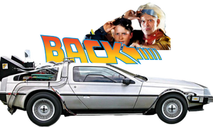
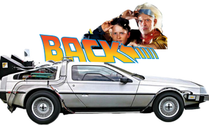

Behind the Scenes – The Making of Back To The Future
Take a deep dive into the making of one of the most iconic trilogies in film history. This feature highlights rare footage, interviews, and stories from the set of Back to the Future.
Note: This video cannot be embedded due to restrictions. Please watch it directly on YouTube.